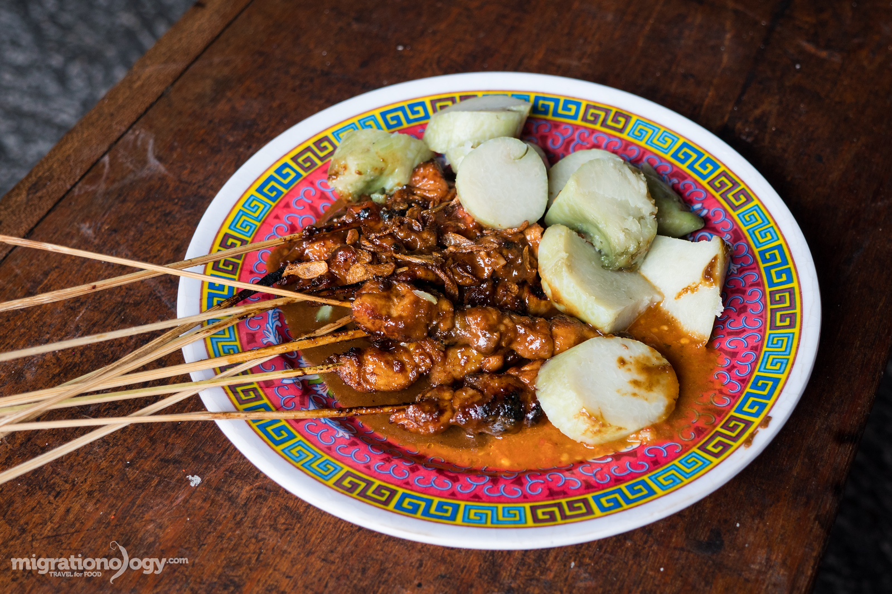

Resep Sate Ayam / Kambing
1 ekor ayam (potong 4)
1 sdm Garam
1/2 butir Gula merah
1 bks santan instan
4 buah Jeruk limau
secukupnya Minyak untuk menumis
secukupnya Air
2 saset Terasi abc
1 jari Kencur
10 siung Bawang putih
8 buah Cabe rawit
12 siung Bawang merah
10 buah Cabe merah keriting
4 butir kemiri sangrai